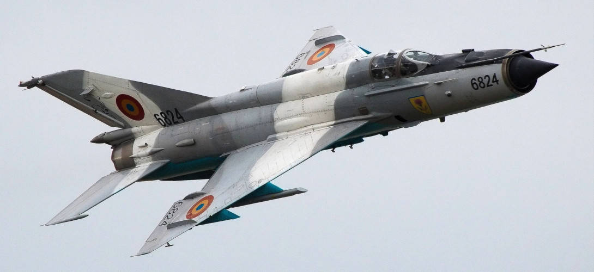

Service History
- Entry into service :
The MiG-21 entered service with the IAF in 1963 as India's first supersonic fighter aircraft.
Over the years, India acquired various MiG-21 models, including the MiG-21FL, MiG-21M, MiG-21MF, and the upgraded MiG-21 Bison.
- Mjaor Operation :
The MiG-21 has been involved in numerous conflicts, including the 1965 Indo-Pak War, the 1971 Indo-Pak War, and the
Kargil War of 1999. It has performed air combat, ground attack, and reconnaissance roles, proving its versatility across missions.
- Current Status:
Although many variants of the MiG-21 have been phased out, the MiG-21 Bison, an upgraded version,
continues to serve in limited numbers. However, it is expected to retire completely in the coming years, with newer multi-role fighters replacing it.
Technical Specifications
- Weight : Approximately 5 tons (empty weight).
- Engine : Powered by a Tumansky R-11 or R-25 turbojet engine, depending on the variant, producing around 13,000 pounds of thrust with afterburner.
- Speed : Capable of reaching speeds up to Mach 2.0 (about 2,175 km/h) at high altitudes.
- Armament :
- Primary: A 23mm Gryazev-Shipunov GSh-23 twin-barrel cannon in later variants.
- External Hardpoints: Capacity for 1,000–1,500 kg of weapons, including air-to-air missiles (such as R-3, R-13, and R-60), unguided bombs, and rockets.
- Notable Feature : Delta-wing design, which provided excellent speed and agility but required skillful piloting due to limited low-speed maneuverability.
- Range : Approximately 1,200 km with drop tanks, depending on mission profile and fuel load.
- Crew : Single-seat cockpit.
Historical Significance
The MiG-21 is widely regarded as a key player in modernizing the IAF and providing India with a reliable and fast interceptor. Its speed, low operational costs, and ease of maintenance made
it a mainstay for several decades. The MiG-21’s performance in air combat during the 1971 Indo-Pak War, where it scored several aerial victories, contributed to its legendary status in Indian military aviation.
Notable Missions
- 1965 Indo-Pak War: Although only a few MiG-21s were operational, the aircraft
provided crucial support, and its arrival marked a turning point in India's air capabilities.
- 1971 Indo-Pak War:The MiG-21 saw extensive combat, achieving notable success in air-to-air engagements.
It played a crucial role in the conflict, including the sinking of the Pakistani submarine PNS Ghazi.
- Kargil War (1999):The MiG-21 Bison was deployed for ground-attack and support missions.
Despite its age, it successfully delivered precision strikes against enemy positions in high-altitude environments.
- Balakot Airstrike (2019):A MiG-21 Bison, flown by Wing Commander Abhinandan Varthaman,
engaged in an aerial combat encounter during heightened tensions with Pakistan, leading to a historic dogfight.